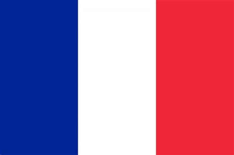
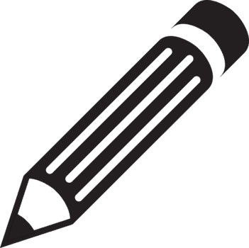
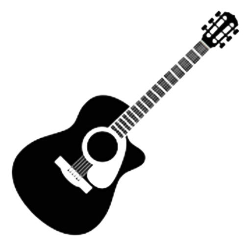
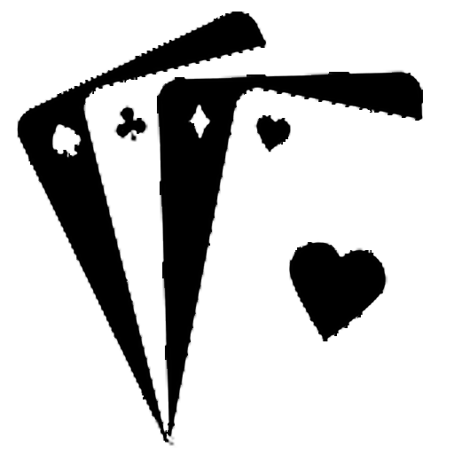
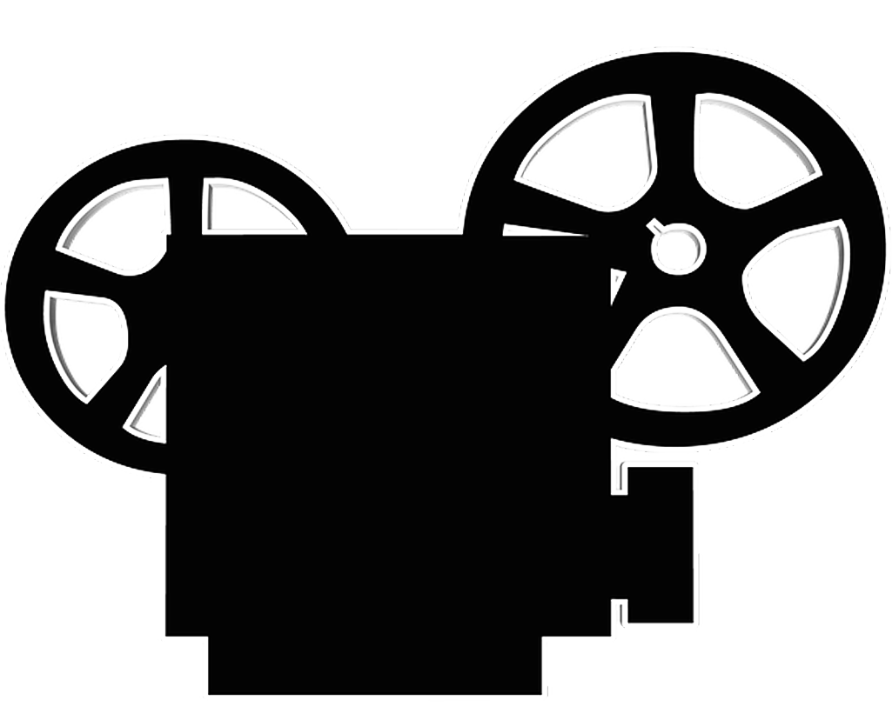
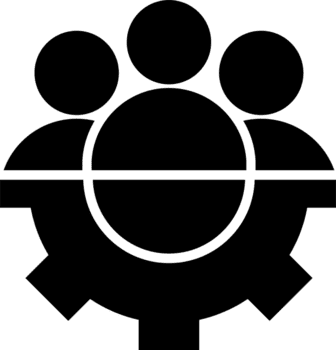

Contacts
Mail :Compétences audiovisuelles
Spécialités
-
Animation
Scénarisation
Montage vidéo
Mise en scène
Éclairage
Prise son
Logiciels déjà utilisés
-
DaVinci resolve
Avid Media Composer
GIMP
Photoshop
After effect
Langues
-

Français : maternel
 Anglais : C1
Anglais : C1Espagnol : A2
Passions
-

Dessin
 Guitare
 Jeux de sociétés
Parcours et diplômes
2023-2026 : Licence Sciences et Technologies.
-
Parcours audovisuel et médias numériques
La licence m'a permis d'obtenir les capacités nécessaires à mon travail et d'obtenir des contacts pour la suite.
2024-2025 : Mobilité d'études à Rouyn-Noranda.
-
Parcours création et nouveaux médias
Un voyage instructif, rythmé par la réalisation de nombreux et divers court-métrages.
2023 : Baccalauréat Général - Mention bien
-
CANDIDAT LIBRE
Spécialités : Mathématiques, NSI (Numérique et Sciences Informatiques) et Arts - Cinéma Audiovisuel.
2010-2021 : Instruction en famille

Experiences pratiques
Stage en entreprise Septembre-octobre 2025.
-
Espace Gérard Philipe -
Une experience qui m'a permis de mieux comprendre le fonctionnement
d'un environnement de travail.
J’ai dû utiliser mes compétences d’éclairagiste et de monteur,
en respectant des critères de qualité et des délais professionnels.
Travaux universitaires :
-
Nombreux travaux de création cinématographiques
réalisés en groupes et avec un matériel professionnel.
Mise en avant de la liberté créative et de l’espace laissé à
nos propres idées et projets.
Apprentissage via clubs et modules
-
Connaissance des fonctions de la production.
Diriger une équipe sur un projet commun.
Apprentissage des bases du codage et de l'infographie.
Cours particuliers de guitare et de musique.
Court-métrages autodidactes :
-
Court-métrages d’animation stop motion amateurs.
Expérimentation d’animation et de storytelling.
Initiation à Davinci Resolve.
Pour avoir un exemple de mon travail, vous pouvez consulter le portfolio ci dessous
Portfolio